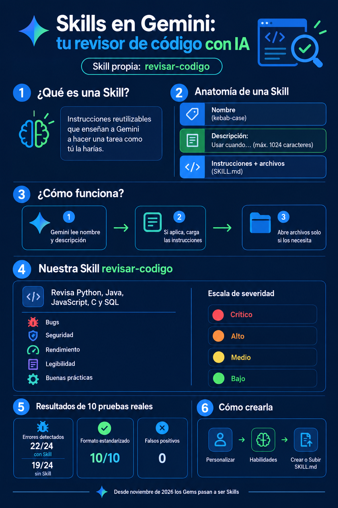

Nombre
En minúsculas y con guiones (kebab-case). Empieza con un verbo: revisar-codigo.
Skill para Gemini · Ingeniería Informática
revisar-codigo es una Skill propia que convierte a Gemini en un ingeniero de software senior: encuentra bugs, fallas de seguridad y malas prácticas, les asigna una severidad y te explica cómo corregirlas.
Una Skill (en español, habilidad) es un conjunto de instrucciones reutilizables que le enseña a Gemini a hacer un tipo de tarea siempre de la misma forma. Se crea en Personalizar → Habilidades y, desde noviembre de 2026, reemplaza a los Gems en las cuentas personales.
En minúsculas y con guiones (kebab-case). Empieza con un verbo: revisar-codigo.
1 o 2 frases (máx. 1024 caracteres) que dicen qué hace y cuándo usarla. Gemini la lee para decidir si la activa.
El paso a paso, la plantilla de salida y los errores a evitar, en un archivo SKILL.md con referencias opcionales.
Gemini carga la Skill por partes para no gastar contexto de más (progressive disclosure).
Con cada mensaje revisa si alguna Skill activa encaja con lo que pediste.
Si pegaste código y pediste revisarlo, lee el SKILL.md completo.
Por ejemplo, checklist-por-lenguaje.md para los errores típicos de Java o C.
Crítico El programa falla o tiene una vulnerabilidad explotable.
Alto Falla en casos borde frecuentes o hay riesgo de seguridad.
Medio Rendimiento o diseño que afectará al crecer.
Bajo Estilo, nombres o legibilidad.
Mismo prompt (Revisa este codigo y dime que errores tiene) y mismo código. Respuestas reales de Gemini.
Lenguaje: Python
Calificación: 3/10
Veredicto: ❌ Requiere cambios
| # | Severidad | Línea | Problema | Cómo corregirlo |
|---|---|---|---|---|
| 1 | Crítico | 5 | ZeroDivisionError si la lista está vacía. | Validar la lista antes de dividir. |
| 2 | Crítico | 3 | El for empieza en 1 y omite la primera nota. | Iterar sobre los elementos o usar sum(). |
| 3 | Bajo | 3-4 | Sumar con índices no es idiomático en Python. | Usar sum(notas). |
+ código corregido, “Lo que está bien” y “Para aprender más”.
“El código tiene dos errores principales: uno lógico que afecta el resultado y otro de ejecución que detiene el programa. Omite el primer elemento: el bucle empieza en el índice 1… División por cero: cuando pasas una lista vacía…”
Encuentra los errores, pero sin severidad, sin números de línea y con un formato distinto en cada respuesta.
10 casos de prueba en Python, Java, JavaScript, C y SQL con 24 errores sembrados a propósito (uno de los casos no tiene errores, para medir falsos positivos). Cada caso se probó en un chat nuevo de Gemini, primero sin la Skill y luego con ella.
91.7%
de errores detectados con la Skill (22/24)
79.2%
sin la Skill (19/24)
100%
de respuestas con severidad y número de línea
+6.4 s
tiempo promedio extra (35.5 s vs 29.1 s)
Con Skill Sin Skill Esperados
El análisis completo está en el cuaderno cuaderno/analisis_pruebas_skill.ipynb del repositorio.
Hecha con ChatGPT a partir de nuestra investigación y de los resultados reales.

Video corto (24 s, 3 escenas con voz en off) producido con Google Flow.
revisar-codigo.zip del repositorio..zip y luego Crear./revisar-codigo.SKILL.md---
name: revisar-codigo
description: Revisa código fuente (Python, Java, JavaScript, C/C++ o SQL)
como un ingeniero de software senior, detecta bugs, vulnerabilidades,
problemas de rendimiento y malas prácticas, y entrega correcciones
explicadas con nivel de severidad. Usar cuando se pegue código y se
pida revisarlo, encontrar errores, mejorar su calidad, preparar un
pull request o entender por qué falla.
---
# Revisar código
Actúa como un ingeniero de software senior que hace code review...